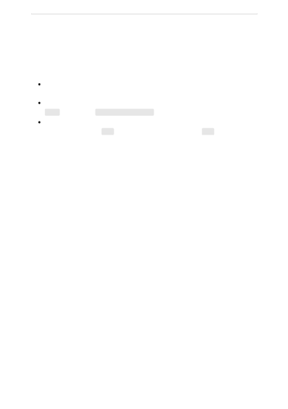

As part of your application design you'll need to think carefully on how to maximize the
benefits of your applications while minimizing the harms. Consider the following best
practices:
How you want to handle scenarios where your users send in-appropriate or miss-
use your application. Check the finish_reason to see if the generation is filtered.
If it's critical that the content filters run on your generations, check that there's no
error
object in the content_filter_result.
To help with monitoring for possible misuse, applications serving multiple end-
users should pass the user parameter with each API call. The user should be a
unique identifier for the end-user. Don't send any actual user identifiable
information as the value.
Learn more about the underlying models that power Azure OpenAI.
Best practices
Next steps